Decameron Web
Table of Contents
Abstract
Decameron Web (DW) offers an online digital edition of Boccaccio’s Decameron both in Italian and English language. It is a comprehensive information portal about the Decameron and the cultural, historical context of the time in which it was written. Thanks to its high usability and consolidated sustainability, DW has reached sufficient maturity and consistency to be a valuable resource for research. Nonetheless, the technological methods adopted for the encoding, exploration, and visualisation of the text should undergo major improvements in order to consider DW as a state-of-the-art scholarly digital edition (SDE). The author describes and evaluates DW from a philological and methodological point of view. After a general introduction, the author goes into more detail on the subject and content of the project, focusing on the aims and methods pursued during its realization. Particular attention is devoted to the quality of the presentation of the edition. The description of the edition’s main features is supported by some personal suggestions for improvement.
Introduction
Decameron Web (DW)1 is a project-focused online edition of Boccaccio’s Decameron. It has been realized by the Virtual Humanities Lab of the Italian Studies Department at Brown University.2 The project offers an Italian and an English version of the Decameron, including over 300 documents and dozens of images for the study of the text. DW was originally conceived as a “participatory hypertext project used to teach the Decameron” (Brown University n.d.), started between 1994 and 1995, and it still considers itself as a learning resource. It attempts to provide a 360-degree educational experience of the Decameron to a wide and various audience, by adopting an interdisciplinary perspective. In the presentation of the project, it is stated:
Through a creative use of technology, our project provides the reader with an easily accessible and flexible yet well-structured wealth of information on the literary, historical and cultural context of the Decameron, thus allowing a vivid yet rigorously philological understanding of the past in which the work was conceived.
The general parameters followed in the realization of the project are easily accessible. This review will discuss whether these self-imposed principles have been respected and, using RIDE’s Criteria for Reviewing Scholarly Digital Editions as a reference (Sahle 2014), I will determine whether DW can be considered a proper scholarly digital edition. It is important to notice that DW does not state anywhere that it is intended to function as a digital scholarly edition: hence, this review is testing it for a scenario for which DW might not have been originally intended. Nonetheless, educational resources need to fulfil many of the requirements of digital editions, especially if they are intended for use at university.
From the very beginning, the responsible co-editors of the project have been Massimo Riva, professor of Italian Studies at Brown University, Providence and Michael Papio, professor of Italian Studies at the University of Massachusetts, Amherst. Information about the other directors, the project staff, the Editorial and Advisory Board are included in the section ‘Project’ of the website. DW received funds for the development by the National Endowment for the Humanities’ two-year grants. An important event that marked the historical evolution of the project was ‘The Boccaccio AfterLife Prize for Best Translation and Adaptation of a Decameron novella into any Media’, an award won in 2013 that brought new updates to the project.3
Considering the fast evolution of technologies in the digital world, the fact that the website is still alive and growing in terms of content, thanks to the collaboration between the creators and the users, could surprise at first. However, it should be remarked that the technologies adopted are extremely simple. The text of the Decameron contains PHP hyperlinks that allow jumping from the English to the Italian version and vice versa. An XML encoding of the text is not available, hence it is not possible to see which tags are used to enrich the text. Image-based resources are generally included in JPG format and do not adopt any particular standard for digital images, such as the IIIF technology.4 These are just a few examples showing that, on the one hand, the project maintenance is currently not heavily endangered by complex technologies, but on the other hand, the technologies used are often no longer up-to-date.
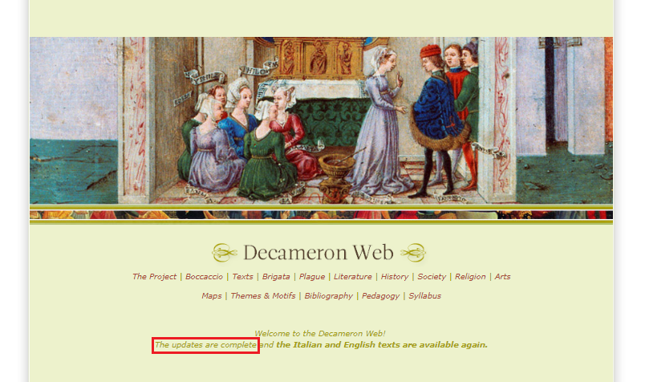
As a learning resource, DW is not restricted to the academic field; it offers educational material for teachers, besides being a useful tool for students and a source of knowledge for any passionate reader of Boccaccio. Therefore, its target audience is made of “students, teachers, scholars and readers of the Decameron” (Brown University 1995). In terms of usability, DW is suitable for all of them.
The project offers a great variety of external resources reachable from the website, avoiding to overload the website with information that already exists. Links to external resources are disseminated throughout DW, according to their content and the reason why they have been included. There is a network of hyperlinks to resources managed by Brown University, such as the pages of The Sheridan Center , the Virtual Humanities Lab and the Center for Digital Scholarship . Interlinkage is also present among the different sections within the website: words identifying other sections are serving as hyperlinks to that section. Finally, an extensive bibliography is provided both for the website at large and for its individual sections. DW makes wide-ranging and efficient use of linked resources.
Subject and content
Although already rich in content and functions, DW presents itself as a growing reference resource for scholars of the Decameron. The selection of the material is based on the motivation of reaching a wide audience who can be interested in different aspects of the work. The variety of sources and documents is declared in the ‘About’ of the project:
[…] we believe that our project can provide its beneficiaries with a sort of specialized bookshelf or mini-library generated from and existing alongside a reading of Boccaccio’s masterpiece. This mini-library or virtual encyclopedia includes the text in its established critical edition (Branca), sources, translations, annotations and commentaries, bibliographies, a growing selection of critical and interpretive essays, as well as visual and audio materials.
The quotation suggests, first, the type of printed edition adopted for the project, which is a critical edition; second, the variety of resources ‘surrounding’ and enriching the digital edition of the Decameron. The selection of documents included in the website is reasonable for the aim pursued by the project.
The online digital edition of the Decameron provides the full transcription of the text. The print editions used for the creation of the online digital edition of Boccaccio’s masterpiece are:
- the Decameron edited by V. Branca for Einaudi (1992) for the Italian version, which is “an established critical edition” (Brown University 1995), based on Boccaccio’s autograph Hamilton 90;5
- The Decameron of Giovanni Boccaccio, translated by J. M. Rigg, London (1921) for the English translation. The website defines this edition as reliable and faithful, due to its “highly literal approach to translation” (Brown University 1995). In this case, the user cannot find a specification of the type of edition created by Rigg;
- partly English translations attributed to John Florio (Decameron, 1620).
In the ‘About’ of the project, DW declares its use of a critical edition of the text for its Italian version. However, the critical apparatus of Branca’s print edition, documenting the known variations among different witnesses to the text, is completely missing on the website.6 As declared in the introduction to the project, the texts of reference were selected to facilitate the approach to a medieval text to the project’s main audience: high school teachers and students. Whether the paratext was excluded from the website for this reason or not, certainly the lack of inclusion of the critical apparatus of both the Italian and English version of the Decameron means that the text presented is ultimately incomplete. By comparing the Italian version of the Decameron in DW with Branca's referenced printed edition, some sparse errors can be detected in the former, supposedly mainly due to transcription errors.7
Moreover, it should be remarked that the text chosen for the Italian version is not the most recent existing critical edition of Boccaccio’s Decameron. A new edition of the work, edited by Giancarlo Alfano, Maurizio Fiorilla and Amedeo Quondam, has been published by the Biblioteca Universale Rizzoli (BUR) in 2013.8 Both Fiorilla’s and Branca’s editions are based on the Hamilton 90. However, according to Fiorilla (Decameron, 2013), as explained in the introductory notes to the text, the comparative analysis of the three most reliable witnesses of the Decameron, which are the Hamilton 90 (B), the Parigino Italiano 482 (P) and the Laurenziano Plut. XLII 1 (MN), led him to make some changes to Branca’s edition. The changes concern several readings, some printing errors, punctuation, the adoption of the form ‘sè’ rather than the usual ‘se’ as the second singular person of present indicative of the verb ‘to be’. Besides, Fiorilla decided to reproduce in part the graphic system of capital letters used by Boccaccio, which is represented in the Hamilton 90, to catch the reader’s attention in specific moments of the narration.9
In terms of the structural organisation of the text, the Decameron’s structure resembles a series of frames that merge into each other; the external narrator tells the reader about ten internal narrators who in turn tell stories that occasionally contain characters who tell stories. To navigate the text, DW gives the possibility to choose, first, among ‘Proem’, ‘First Day’ to ‘Tenth Day’, ‘Author’s Epilogue’. Then, while the ‘Proem’ and the ‘Author’s Epilogue’ do not present further nested levels, each of the ten days presents the same nested structure: an ‘Introduction’, ‘Novel I’ to ‘Novel X’, and a ‘Conclusion’.
Textual resources: a ‘mini-library’
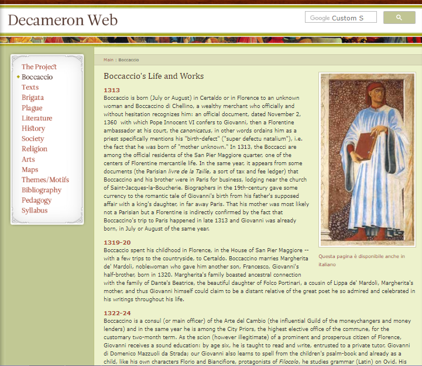
Other resources
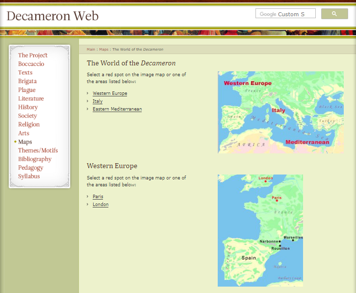 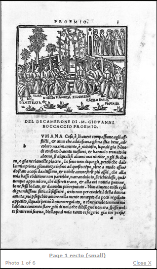
It would be an improvement, especially for a scholarly audience, to enrich DW with the images of the autograph Hamilton 90, which is preserved in Berlin’s Staatsbibliothek Preussischer Kulturbesitz. Berlin’s Staatsbibliothek also has high-resolution graphical representations of the codex in its online portal.12 To enrich the digital edition with the visualisation of the autograph, either a connection could be created from DW to already existing external sources such as the latter or a parallel view of the text with the corresponding picture of the codex could be added within DW. The simultaneous representation of text and image of the manuscript is already offered by other SDEs (e.g. The Digital Vercelli Book), and has become state of the art.
In addition to images, the project also offers audio clips of medieval music, as well as a link to a YouTube clip of Pasolini’s cinematic adaptation of the Decameron. Although different media are offered to the user, they are mostly isolated and retrievable through links directing to different pages. They could be used more effectively through better integration. Using a variety of media to visualise the work offers new perspectives to interpret it, enriching the information that can be extracted at the level of the text by going beyond it. However, in this context, music and movies are mainly intended for teaching purposes. Their contribution to the understanding of the digital edition is limited to giving an illustrative presentation of the stories.
Aims, methods and data modeling
Aims
DW goes beyond the creation of an online edition focused on the Italian version and English translation of Boccaccio’s masterpiece: the editors intend to give the user the possibility to reach a thorough grasp of the work by exploring other fields of study. Massimo Riva recognizes that the nature of the Decameron is itself multidisciplinary: “The Decameron defined the standard of Italian prose narrative for four centuries and deeply influenced Renaissance drama. It is also a goldmine for information about everyday life in the late Middle Ages.” (Brown University 1995). Starting from this assumption, an interesting parallel is drawn between the past and the present. In the general introduction to the project, we read:
A true encyclopedia of early modern life and a summa of late medieval culture, the Decameron is also a universal repertory of perennially human situations and dilemmas: it is the perfect subject for an experiment in a new form of scholarly and pedagogical communication aimed at renewing a living dialogue between a distant past and our present.
The Decameron constitutes an open window to life in the Middle Ages as well as in the Modern Era. Having said that, a lot of improvements, on the technological side, could still be made to align DW with the most recent and updated scholarly digital editions. The creators of the project aimed at understanding how to exploit the tools provided by new technologies to facilitate this transition: “The guiding question of our project is how contemporary informational technology can facilitate, enhance and innovate the complex cognitive and learning activities involved in reading a late medieval literary text like Boccaccio’s Decameron” (Brown University 1995).
Methods
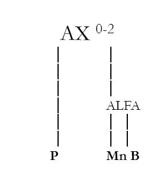 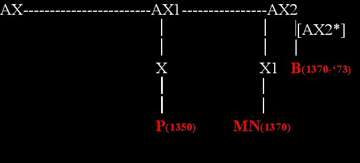
Data modeling
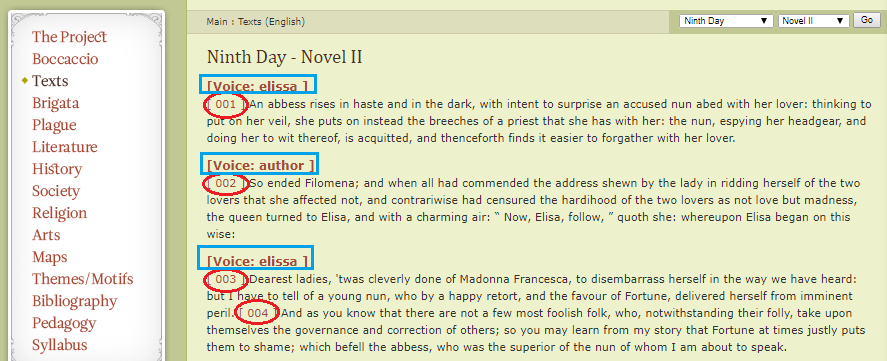
Publication and presentation
Interface, sustainability and usability
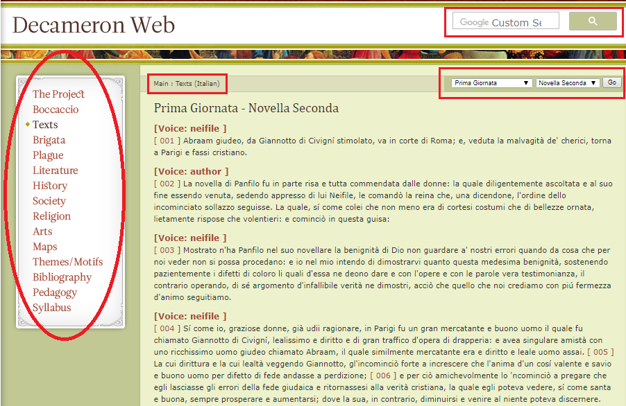
The interface of the edition is extremely simple and intuitive. The first impression is that the website was created a long time ago. A great effort has been made at modernising it, as explicitly declared in the page of the Brown University’s Center for Digital Scholarship: “In 2009 and 2010, the Decameron Web was redesigned and updated to have a more contemporary look, to conform to current HTML standards, and to work with updated HTML technologies such as javascript.” (Brown University, n.d.). However, since 2009 a decade has passed, and the interface could be made more modern and attractive. Nevertheless, the website works and has already proven to be able to readapt to the technological changes of the digital world, suggesting good prospects for long-term use.
To guarantee DW’s sustainability, a plan for the long-term preservation of the website is urgently necessary. Besides, the possibility to access at least the XML files of the Decameron should be granted. In terms of future development, there is only a reference to the project’s contents, not to the technologies adopted, nor to the methods employed for the data storage, as stated in the section ‘The Project’: “This collection of materials will continue to grow in years to come, as students and scholars at Brown University and other institutions contribute syllabi, successful teaching strategies, new essays, interpretations, images, and so forth” (Brown University 1995). The lack of information concerning plans for the website’s preservation and where and how data is stored makes it difficult to assess the DW’s sustainability.
In terms of usability, the project could attempt to provide the user with both the Italian and English versions of all the contents. At the moment, it is not possible to choose on the home page which language version should be used for the entire website; the main language is English and, except for the text of the Decameron, only a few sections offer the option of switching to Italian. For instance, for the two texts Corbaccio and Elegia di Madonna Fiammetta, an additional menu giving the possibility to change the language could be included, as it is already available for the other textual resources. Indeed, the current button intended for this function does not work properly: once clicked, it redirects to the page containing the text of the Decameron. Since this very probably disorientates some users, I would suggest deactivating or removing the button as long as the English versions of Corbaccio and Elegia are not present. Assuming that the main community for Decameron studies is Italophone, making available both the languages for each page would increase the usability of the website and open it up to a wider audience.
Search
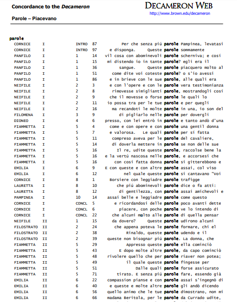 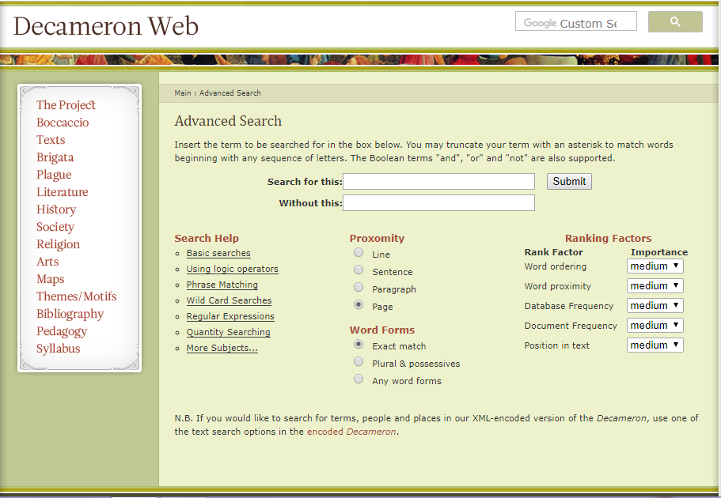
- Lexical index, realized by using the KWIC format, accessible from the ‘Text Research Tools’ in the ‘Texts’ section.13 The tables with the concordances are available either in pdf format for online consultation or in zip format for download (see Fig. 9). An icon for downloading the Acrobat Reader and a hyperlink to a help page are also provided;
- People and places in the Decameron, accessible from the ‘Text Research Tools’ in the ‘Texts’ section.14 The list of places, listed either alphabetically or by the story number, is accessible from the section ‘Maps’, as well;
- People, Place and Word for the Italian version, only Word for the English one, accessible through the search function directly from the text;
- Motif index, accessible from the ‘Themes/Motifs’ section;
- Advanced Search (see Fig. 10).15
I encountered a number of issues when trying to query the text through some of these options. The Advanced Search does not work, nor does the Search for People, Place, Word from the Italian text version and for Word from the English one. Moreover, being disseminated throughout the website, sometimes the same option is accessible through different pages, causing redundancy. To optimize the search interface, research options strictly linked to the text could be made accessible directly from the text itself. Despite the multitude of search options on the website, many of them are currently not functional: it seems that the proprietary search functions have been abandoned and functionally substituted by the google search bar.
Social media integration
In terms of social media presence, DW does not seem to integrate with any other social media or virtual research platforms, except for a Twitter pod dating back to 2016 and the Decameronweb Blog (Brown University 2018) whose Archives’ last updates date back to 2018. However, these two resources require Brown members’ authentication. The online digital edition with all its functions is suitable for a mobile device. On the website, there is a strong invitation for users to give their active contribution to improve the project, by directly contacting the two co-editors, whose contact information is easily available. The wish to create a knowledge-sharing community of students and readers of the Decameron emerges in various passages: “Our group and classroom at Brown University will serve as the gateway to a virtual community of readers and students of the Decameron” (Brown University 1995), and again:
[…] we conceive of this corpus and its basic structure as a point of departure for a wide range of collaborative activities which will enhance the project’s future growth according to the interests and contributions of the virtual community of students, teachers, scholars and readers of the Decameron.
However, so far DW’s social integration and opportunities to interact with the project are restricted, thus limiting the establishment of the desired community and external discussion about the Decameron.
Reliability
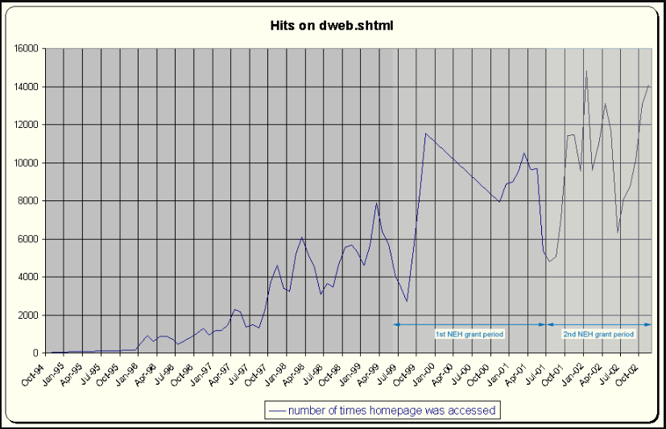
Conclusion
The description and evaluation of DW realized in this review have revealed some issues concerning its conformity with the principles of the “digital paradigm” (Sahle 2016, 26-27)19 and therefore, its classification as a scholarly digital edition. According to Sahle, the digital paradigm consists of a series of principles, such as hypertextuality, multimediality, transmediality, modularity and fluidity.
The many resources used on the website and the representation of the text do not reflect an organisation of the edition into multiple layers of textual representation originating from the same abstract modeling of the text. Hence, the facilitation of the multiple texts on the theoretical, methodological and practical level and the “multipurpose representations” which characterize “the shift from media orientation to data orientation” (Sahle 2016, 32) that, according to Patrick Sahle, represents the real revolution of the digital paradigm, is not achieved.
In general, the potential of a digitally encoded text, distinguishing a digital edition from a mere digitised text, is not fully exploited. DW uses a printed edition as the reference text for the digital online edition but lacks the inclusion of paratextual information. The XML encoding used to model the text is not available to the user, the search functions do not work and the indexes are given as static pdf pages, organised alphabetically. The mark up of the text only encompasses names and numbers in order to switch between languages; the user cannot visualise the text in both languages in parallel, nor visualise the text accompanied by the image of the manuscript in parallel, which is a common feature among other SDEs.20 Overall, the encoded text does not offer different views and presentations of the text. A printed edition of the DW would not result in a significant loss in contents and functionality, apart from its hypertextuality, which is indeed inherently digital. A synoptic edition with the Italian text on one side and the English one on the other, further enriched with the critical apparatus, would certainly be more informative.
Moving on to Sahle’s principles and, specifically, to the principle of fluidity, the edition as a publication is rather static, fixed on a distinct moment of publication and based on a single (and not the most recent) edition of the text. DW conveys the idea of the Decameron as a finished product rather than as an ongoing process. Despite the inclusion of a variety of contextual material, some important editorial information, such as the critical apparatus and a reflection over the problems concerning the text’s tradition, is missing. Therefore, improvements could be done to obtain a more modularised structure of DW as well. It cannot be said that the hyperlinks employed restructure the contents of the edition; they rather offer a way to reach useful resources enriching these contents. As for multimediality, the website offers a multitude of different media to experience the text from a variety of perspectives; however, these media are not wholly integrated within the text, remaining mere links to other pages.
Given all the considerations above, DW does not seem to fully conform to digital scholarly standards, nor does it fulfil the digital paradigm as defined by Patrick Sahle. Therefore, it can hardly be considered as a state-of-the-art SDE at the moment. Having said that, the current evaluation could surely be re-discussed after the architecture of the edition has been improved.
Nonetheless, some positive aspects are worth mentioning. DW is very open to changes and encourages active use. It invites not only current collaborators but any user to contribute to the project by sharing their knowledge and suggestions. The multiple aims and the interdisciplinary nature of the edition, self-stated in the project’s aims, are fully achieved. The project’s creative and pedagogical use of technology aiming at delivering an “educational experience based on a literary text that is open to a variety of cultural interests and levels of learning” (Brown University 1995) is stated and fully fulfilled. Each new content is provided with a technical and detailed explanation of its features and an extensive bibliography, providing the user with a critical understanding of both the Decameron and the context in which it was written.
In terms of usability, every aspect of DW is carefully considered and explicitly explained, taking into account the type of audience, their level of knowledge of the Decameron and possible issues they can encounter on the website. In this way, the edition becomes easily accessible even for a non-specialized user. Nonetheless, the organisation of the contents is not very intuitive. It could be improved by making a clearer distinction between the edition itself, commentary and apparatus sections and related resources, and by reducing redundancy. Extra value could be added to DW by making the graphic visualisation of the Decameron’s autograph Hamilton 90 through pictures directly available and by updating the referential print edition with the most recent existing one. These changes could also make DW better suited to an academic audience. Nevertheless, DW offers a huge quantity of contents and functionalities of high academic quality, thanks to the project staff’s constant effort to provide updated and reliable content.
Some other technological improvements could be made to DW, such as allowing for the parallel visualisation of the text in the two languages, making the XML encoding available and rendering some contents such as maps and indexing options interactive. Contents should be better integrated with the text and the interface should undergo a process of modernisation. These changes would bring DW closer to state-of-the-art scholarly digital editions. Having said that, it should be remembered that DW was not originally intended as a scholarly digital edition, but rather as a mini-library, a sort of encyclopaedia of information concerning Boccaccio’s masterpiece. In this sense, it is undeniable that DW fully accomplished its original educational purpose. Ultimately, it is extraordinary that this edition started at the end of the last century is still available online.
Bibliography
- Boccaccio, Giovanni. 1992. Decameron, edited by Vittore Branca, vv. 1, 2. Torino: Einaudi editore.
- Boccaccio, Giovanni. 2013. Decameron, edited by Amedeo Quondam, Maurizio Fiorilla and Giancarlo Alfano. Milano: BUR Rizzoli.
- Brown University. n.d. Center For Digital Scholarship. Accessed October 21, 2020. https://web.archive.org/web/20211013084615/https://library.brown.edu/create/cds/boccaccios-decameron/.
- Brown University, Italian Studies Department’s Virtual Humanities Lab. 1995. Decameron Web. Accessed October 21, 2020. https://web.archive.org/web/20211013082942/https://www.brown.edu/Departments/Italian_Studies/dweb/.
- Brown University. 2018. The Decameron. Replaying the Game of Storytelling. Accessed October 21, 2020. https://web.archive.org/web/20211013085142/https://blogs.brown.edu/ital-1020-s01-2018-spring/.
- Sahle, Patrick. June 2014. Criteria for Reviewing Scholarly Digital Editions, version 1.1. Accessed October 21, 2020. https://web.archive.org/web/20211013085211/https://www.i-d-e.de/publikationen/weitereschriften/criteria-version-1-1/.
- Sahle, Patrick. 2016. “What is a Scholarly Digital Edition”. In Digital Scholarly Editing: Theories and Practices, edited by Elena Pierazzo, and Matthew J. Driscoll, 19-39. Cambridge, UK: Open Book Publishers. http://dx.doi.org/10.11647/OBP.0095.02.
Notes
- URL of DW: https://web.archive.org/web/20210617211957/https://www.brown.edu/Departments/Italian_Studies/dweb/. ↑
- On the bottom of DW’s home page, the expressions ‘Italian Studies Department’, ‘Virtual Humanities’ and ‘Brown University’ are hyperlinks to the webpage of the Brown University’s Italian Studies Department, the Virtual Humanities Lab (VHL) and the Brown University, respectively. ↑
- ‘The Boccaccio AfterLife Prize for Best Translation and Adaptation of a Decameron novella into any Media’ was a prize awarded by Decameron Web, Brown University in collaboration with the Italian Consulate General in Boston, Massachusetts and the Ente Nazionale Giovanni Boccaccio of Certaldo, Italy to celebrate the 700th anniversary of Giovanni Boccaccio’s birth and the year of Italian Culture in the United States. See https://web.archive.org/web/20211013083033/https://www.brown.edu/Departments/Italian_Studies/dweb/the_project/afterlife.php. ↑
- URL to the International Image Interoperability Framework (IIIF): https://iiif.io/ (Accessed January 16, 2021). ↑
- The manuscript shelf marked as ‘Hamilton 90’, which represents the final redaction of Boccaccio’s Decameron, is now preserved in Berlin’s Staatsbibliothek. ↑
- As a personal suggestion, the TEI standard, which could be adopted for the XML encoding of the text, includes a specific module for the encoding of a critical edition which is called the TEI Critical Apparatus. URL to the TEI Critical Apparatus: https://web.archive.org/web/20210902053823/https://www.tei-c.org/release/doc/tei-p5-doc/en/html/TC.html (Accessed January 16, 2021). ↑
- Some of the errors found in DW compared to Branca’s printed version of the Decameron: dieci (DW, Proemio, [001]) - diece (Branca, v. I, p. 3). The latter is defined by Branca as the most common form in the Decameron; un tempo (DW, Proemio, [003]) - contento (Branca, v. I, p. 6); d’essaa’ (DW, Prima Giornata, Introduzione, [010]) - d’essa a’ (Branca, v. I, p. 15); piazza (DW, Quarta Giornata, Novella Seconda, [001]) - Piazza (Branca, v. I, p. 487); pallidi (DW, Quarta Giornata, Novella Seconda, [005]) - palidi (Branca, v. I, p. 498); osservata (DW, Quarta Giornata, Novella Quarta [026]) - observata (Branca, v. I, p. 524); ad (DW, Conclusione dell’Autore, [002]), - a (Branca, v. II, p. 1254). ↑
- Hereinafter referred to as the Fiorilla edition. ↑
- Given that Fiorilla’s 2013 edition of the Decameron represents the most recent critical edition available and given the significant modifications compared to Branca’s 1992 edition and its reliability, I would suggest using Fiorilla’s as the reference print edition for possible future updates of the Decameron Web. ↑
- URL to the timeline in The Charles Harpur Critical Archive: https://web.archive.org/web/20211013083340/http://charles-harpur.org/Biography/Timeline/ (Accessed October 21, 2020). ↑
- See some samples of scanned images of maps at: https://web.archive.org/web/20211013083501/https://www.brown.edu/Departments/Italian_Studies/dweb/images/maps/decworld/paris.php and https://web.archive.org/web/20190318080209/http://www.brown.edu/Departments/Italian_Studies/dweb/images/maps/decworld/polimaps.php (Accessed June 16, 2021). See some samples of images of the Decameron printed book editions embedded in a php page at: https://www.brown.edu/Departments/Italian_Studies/dweb/arts/visualizing/fior1516_intro.php (Accessed June 16, 2021). ↑
- URL to Ms. Ham. 90 in Berlin’s Staatsbibliothek Digitised Collections: http://resolver.staatsbibliothek-berlin.de/SBB0000A07E00000000 (Accessed April 2, 2021). ↑
- URL to the ‘Lexical index’: https://web.archive.org/web/20190201165753/https://www.brown.edu/Departments/Italian_Studies/dweb/texts/concordance.php (Accessed June 16, 2021). ↑
- URL to ‘Browse People and Places’ in the Decameron: https://web.archive.org/web/20211013083850/https://www.brown.edu/Departments/Italian_Studies/dweb/texts/dec_ppl_plces/ (Accessed June 16, 2021). ↑
- URL to the ‘Advanced Search’: https://web.archive.org/web/20211013083942/https://www.brown.edu/Departments/Italian_Studies/dweb/search/ (Accessed June 16, 2021). ↑
- https://www.brown.edu/Departments/Italian_Studies/dweb/the_project/about.php (Accessed June 16, 2021). ↑
- Maps and Geography: https://web.archive.org/web/20211030062336/https://www.brown.edu/Departments/Italian_Studies/dweb/images/maps/maps.php (Accessed 30 October 2021). ↑
- URL to the Boccaccio AfterLife Award page: https://web.archive.org/web/20211013083033/https://www.brown.edu/Departments/Italian_Studies/dweb/the_project/afterlife.php. The user is redirected to a Blog, ‘Italyinus’. (Accessed October 21, 2020). ↑
- “It can be said that digital editions follow a digital paradigm, just as printed editions have been following a paradigm that was shaped by the technical limitations and cultural practices of typography and book printing” (Sahle 2016, 26-27). ↑
- See URL to Jane Austen’s Fiction Manuscripts: http://www.janeausten.ac.uk/index.html (Accessed March 27, 2021), URL to Codice Pelavicino Edizione Digitale: https://web.archive.org/web/20211013084207/http://pelavicino.labcd.unipi.it/ (Accessed March 27, 2021); URL to The Digital Vercelli Book: https://web.archive.org/web/20211013084421/http://vbd.humnet.unipi.it/beta2/ (Accessed March 27, 2021). ↑
@article{decameron,
author = {Peruch, Eleonora},
title = {Decameron Web},
journal = {RIDE – A review journal for digital editions and resources},
number = {14},
year = {2021},
doi = {10.18716/ride.a.14.4},
url = {https://doi.org/10.18716/ride.a.14.4},
}TY - JOUR
AU - Peruch, Eleonora
TI - Decameron Web
T2 - RIDE – A review journal for digital editions and resources
IS - 14
PY - 2021
DA - 2021/12
DO - 10.18716/ride.a.14.4
UR - https://doi.org/10.18716/ride.a.14.4
PB - Institut für Dokumentologie und Editorik e.V.
LA - en
ER - Peruch, E. (2021). Decameron Web. RIDE – A review journal for digital editions and resources, (14). https://doi.org/10.18716/ride.a.14.4Peruch, Eleonora. "Decameron Web." RIDE – A review journal for digital editions and resources, no. 14, 2021. https://doi.org/10.18716/ride.a.14.4.Peruch, Eleonora. "Decameron Web." RIDE – A review journal for digital editions and resources, no. 14 (2021). https://doi.org/10.18716/ride.a.14.4.